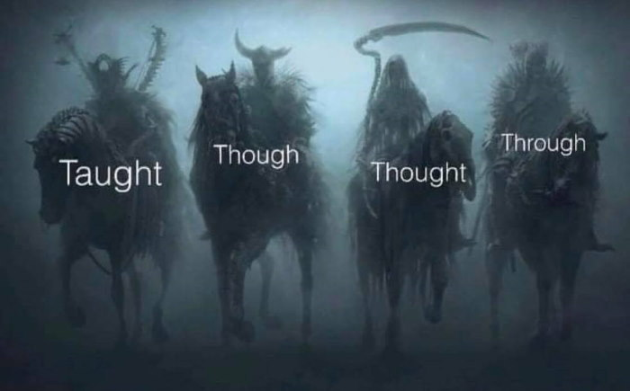

Lesson Forty-Eight - –£—Ä–æ–∫ 48
–ê–≤—Ç–æ—Ä: –°–µ—Ä–≥–µ–π –õ–∏—Å
–ì–ª–∞–≥–æ–ª—ã, –ø–æ—Å–ª–µ –∫–æ—Ç–æ—Ä—ã—Ö –∏–¥—ë—Ç –≥–µ—Ä—É–Ω–¥–∏–π. –ß–∞—Å—Ç—å 1
–ü—Ä–æ–¥–æ–ª–∂–∞–µ–º –≤–∞—à—É —É–∂–µ, –≤–æ–∑–º–æ–∂–Ω–æ, –ª—é–±–∏–º—É—é —Ç–µ–º—É –≥–µ—Ä—É–Ω–¥–∏—è (–Ω–∞—á–∞–ª–æ –≤ —É—Ä–æ–∫–µ 40, –∑–∞—Ç–µ–º —É—Ä–æ–∫–∏: 45, 46, 47).
Следующие глаголы вы уже знаете. После глагола ‘understand’ может быть как сразу герундий, так и дополнение с герундием. Слово ‘risk’ не только существительное, но и глагол.
I understand doing what is right can make life hard. – Я понимаю, что делать то, что правильно, может сделать жизнь трудной.
I understand his leaving us. – Я понимаю, почему он ушёл от нас.
He risks being caught. – Он рискует, что его поймают.
В последнем примере ‘be’ в пассиве; шуточный перевод этого примера: он рискует быть котом (caught /коːт/) ")
У следующего известного вам глагола может быть как дополнение, так и дополнение с предлогом ‘for’ без разницы в значении, хотя с предлогом его используют гораздо чаще:
Forgive me for not knowing it. – Прости меня за то, что я не знал этого.
I can’t forgive him (for) lying to me. – Я не могу простить его за то, что он мне врал.
dislike
Данный глагол является антонимом к глаголу ‘like’ с помощью отрицательной приставки dis-, однако, сложно сказать, что это прямо полная его противоположность. Во-первых, он показывает ‘неприязнь’ к чему-либо, т.е. появляется некая ‘раздраженность’, которой нет в обычном отрицании ‘don’t like’. Во-вторых, если век назад он также как и ‘like’ мог брать после себя не только герундий, но и инфинитив, то в настоящее время после него ставят только герундий. Также его можно встретить в виде существительного: нелюбовь, неприязнь.
I dislike going to bars. – Я не люблю ходить по барам/в бары.
Despite my personal dislike for it, I have to do it. – Несмотря на мою личную неприязнь к этому, мне придётся/я должен это сделать.
complete
Данный глагол является синонимом к словам ‘finish’ и ‘end’. Так же, как и с глаголом ‘finish’, после него идёт только герундий (глагол ‘end’ здесь совсем не подходит). Если ‘finish’ просто показывает, что какая-то деятельность или задача подошла к концу или что-то прекратили делать, то ‘complete’ /kəm'pliːt/ указывает на завершение какого-либо длительного процесса. Кроме того, оно может говорить о том, что что-то было (или должно быть) доведено до конечного целого или совершенного состояния. Более того, ‘complete’ может быть и прилагательным: полный, целый; законченный, завершённый.
They completed painting the house. – Они закончили покраску дома.
Here is the completed painting that I wanted to show you. – Вот готовое полотно (досл.: законченная картина), которую я хотел вам показать.
My work is complete. – Моя работа завершена. (работа цельная, возможно, совершенная в каком-то смысле)
My work is finished. – Моя работа закончена. (просто закончена, а дальше думайте сами...)
avoid –∏–∑–±–µ–≥–∞—Ç—å
There were many things he avoided talking to her about. – Было много вещей, о которых он избегал разговаривать с ней.
Stop avoiding me. – Прекрати избегать меня.↩

discuss –æ–±—Å—É–∂–¥–∞—Ç—å
We discussed taking you with us. – Мы обсудили брать (ли) тебя с нами.
We discussed having our work completed by December 30. – Мы обсудили то, что нашу работу надо завершить к 30-му декабря. (досл.: имение нашей работы законченной, здесь конструкция have something done.)
suggest –ø—Ä–µ–¥–ª–∞–≥–∞—Ç—å
I suggest visiting your grandmother. – Я предлагаю навестить твою бабушку.
He suggests your visiting your grandfather. – Он предлагает тебе навестить твоего дедушку. (или: чтобы ты навестил)
They suggest that we should visit our relatives. – Они предлагают, что нам следует навестить наших родственников.
They suggest we visit our relations. – Они предлагают нам навестить наших родственников.
–í–æ—Ç —Ç–∞–∫–∏–µ –≤–∞—Ä–∏–∞–Ω—Ç—ã –≤–æ–∑–º–æ–∂–Ω—ã —Å –≥–ª–∞–≥–æ–ª–æ–º ‚Äòsuggest‚Äô /s…ô' §est/. –£ —Å–ª–æ–≤–∞ ‚Äòrelation‚Äô /r…™'le…™ É(…ô)n/ –æ—Å–Ω–æ–≤–Ω–æ–µ –∑–Ω–∞—á–µ–Ω–∏–µ —ç—Ç–æ ‚Äò–æ—Ç–Ω–æ—à–µ–Ω–∏–µ‚Äô, –Ω–æ –æ–Ω–æ —Ç–∞–∫–∂–µ –º–æ–∂–µ—Ç –±—ã—Ç—å –∏ –≤ –∑–Ω–∞—á–µ–Ω–∏–∏ ‚Äò—Ä–æ–¥—Å—Ç–≤–µ–Ω–Ω–∏–∫‚Äô (= relative).
propose
Опа! Ещё одно ‘предлагать’. Точно же, а то я думаю, было же у нас уже такое слово... (подумал кто-то из вас) Известное вам слово ‘propose’ можно разделить на две части:
1. propose = suggest. Разница только в том, что ‘propose’ более официальное слово (также, как у нас были ‘permit’ и ‘allow’). Более конкретный смысл этих слов: выдвинуть идею / план / предложение на рассмотрение. Про план (действий) это как раз ближе для деловых встреч, т.е. к слову ‘propose’. С ним также будет использоваться герундий.
Далее у нас будет возвращение к теме ‘герундий или инфинитив’. Не получилось придерживаться в уроке только герундия...
2. propose = ‘предлагать’ в значении ‘намереваться сделать что-то’ или ‘выйти замуж/жениться’. В этом случае глагол после него будет в неопределенной форме. Иногда разница между ними очень размытая, но такие вот правила.
Вспомним и глагол ‘offer’. Да, тоже ‘предлагать’. Но в отличие от тех двух ‘неконкретных’ глаголов, этот предлагает что-то конкретное (помощь, вещь, услугу...). Герундия после него нет. Подытожим на примерах:
He proposed having dinner together. – Он предложил поужинать вместе.
He proposed to marry her. – Он предложил ей выйти за него замуж.
How do you propose to complete the project in such a short time? – Как ты намереваешься завершить проект за столь короткое время?
He offered to help us. – Он предложил помочь нам.
I propose to finish this lesson tomorrow. – Я предлагаю (намерен) закончить этот урок завтра.
Последний пример с небольшим намёком... Я понимаю, что у вас могут тут возникнуть сложности, но... что поняли, то поняли. Есть ещё мнение, что ‘propose’ в значении ‘намереваться’ немного устарел, особенно учитывая то, что для ‘намереваться’ есть конкретное слово (intend). Но этому пока нет доказательств. Идём дальше. Нужно глянуть ещё на пару важных слов.
Глагол ‘consider’ вы знаете. После него идёт либо существительное, либо местоимение с инфинитивом, либо герундий.
Everybody considers her to be the best driver in the business. – Все считают её лучшей в своём деле. (досл.: считают, что она есть лучшая)
I’m considering working on Sundays. – Я рассматриваю возможность работы по воскресеньям. (досл.: обдумываю работать ли)
imagine
–í—ã –∑–Ω–∞–µ—Ç–µ —Å–ª–æ–≤–æ ‚Äòpicture‚Äô, —É –Ω–µ–≥–æ –º–Ω–æ–≥–æ –∑–Ω–∞—á–µ–Ω–∏–π, –æ–¥–Ω–æ –∏–∑ –Ω–∏—Ö: –ø—Ä–µ–¥—Å—Ç–∞–≤–ª—è—Ç—å —Å–µ–±–µ, –≤–æ–æ–±—Ä–∞–∂–∞—Ç—å. –¢–æ—á–Ω–æ —Ç–∞–∫–æ–µ –∂–µ –∑–Ω–∞—á–µ–Ω–∏–µ –µ—Å—Ç—å –∏ —É –Ω–µ –º–µ–Ω–µ–µ –≤–∞–∂–Ω–æ–≥–æ —Å–ª–æ–≤–∞: imagine /…™'m√¶ §…™n/. –ò–Ω–æ–≥–¥–∞ —Ä–∞–∑–Ω–∏—Ü—ã –º–µ–∂–¥—É –Ω–∏–º–∏ –Ω–µ—Ç, –∏–Ω–æ–≥–¥–∞ –µ—Å—Ç—å. ‚ÄòImagine‚Äô –¥–µ–ª–∞–µ—Ç –±–æ–ª—å—à–µ —É–ø–æ—Ä –Ω–∞ –≤–æ–æ–±—Ä–∞–∂–µ–Ω–∏–µ (imagination /…™Àåm√¶ §…™'ne…™ É(…ô)/), –≤ –∫–æ—Ç–æ—Ä–æ–º –æ–±—ã—á–Ω–æ –Ω–µ—Ç –∫–æ–Ω–∫—Ä–µ—Ç–∏–∫–∏, –∫–æ–≥–¥–∞ –≤—ã –ø—Ä–µ–¥—Å—Ç–∞–≤–ª—è–µ—Ç–µ —Å–µ–±–µ —á—Ç–æ-—Ç–æ. ‚ÄòPicture‚Äô –∂–µ, –≤ —Å–≤–æ—é –æ—á–µ—Ä–µ–¥—å, –¥–∞—ë—Ç –∫–æ–Ω–∫—Ä–µ—Ç–Ω—É—é –¥–µ—Ç–∞–ª—å–Ω—É—é –∫–∞—Ä—Ç–∏–Ω–∫—É, –∫–æ–≥–¥–∞ –≤—ã —á—Ç–æ-—Ç–æ –ø—Ä–µ–¥—Å—Ç–∞–≤–ª—è–µ—Ç–µ. –ù–∞ –ø–µ—Ä–µ–≤–æ–¥ —ç—Ç–æ, –∫–∞–∫ –ø—Ä–∞–≤–∏–ª–æ, –Ω–µ –≤–ª–∏—è–µ—Ç. –û–±–∞ —Å–ª–æ–≤–∞ –∏—Å–ø–æ–ª—å–∑—É—é—Ç—Å—è –æ–¥–∏–Ω–∞–∫–æ–≤–æ: —Å —Å—É—â–µ—Å—Ç–≤–∏—Ç–µ–ª—å–Ω—ã–º, —Å –º–µ—Å—Ç–æ–∏–º–µ–Ω–∏–µ–º –∏ –∏–Ω—Ñ–∏–Ω–∏—Ç–∏–≤–æ–º –∏–ª–∏ —Å –≥–µ—Ä—É–Ω–¥–∏–µ–º.
I imagined working there would be a great adventure for me. – Я представлял себе, что работать там было бы отличным приключением для меня.
I imagined you to be much leaner. – Я представляла тебя намного более стройным (досл.: более тощим/худым, без лишнего жира).
–ù–∞ —ç—Ç–æ–º —Ö–≤–∞—Ç–∏—Ç. –ó–∞–ø–æ–º–Ω–∏—Ç–µ –Ω–µ–ø—Ä–∞–≤–∏–ª—å–Ω—ã–µ —Ñ–æ—Ä–º—ã –∏–∑–≤–µ—Å—Ç–Ω—ã—Ö –≤–∞–º –≥–ª–∞–≥–æ–ª–æ–≤:
| –ò–Ω—Ñ–∏–Ω–∏—Ç–∏–≤ | –ü—Ä–æ—à–µ–¥—à–µ–µ | –ü—Ä–∏—á–∞—Å—Ç–∏–µ II | –ü–µ—Ä–µ–≤–æ–¥ |
| lie | lay | lain | –ª–µ–∂–∞—Ç—å |
| teach /tiÀê ß/ | taught /t…îÀêt/ | taught /t…îÀêt/ | –æ–±—É—á–∞—Ç—å |

–ß–µ—Ç—ã—Ä–µ –≤—Å–∞–¥–Ω–∏–∫–∞ –ê–ø–æ–∫–∞–ª–∏–ø—Å–∏—Å–∞
–û—Ç–Ω–æ—à–µ–Ω–∏—è
–í –¥–∏–∞–ª–æ–≥–∞—Ö –±—É–¥–µ—Ç –æ–±—ã—á–Ω–æ–µ —á–∏—Å–ª–æ –Ω–æ–≤—ã—Ö —Å–ª–æ–≤. –ü–µ—Ä–µ–±–æ—Ä –±—É–¥–µ—Ç –∑–∞—Å—á—ë—Ç —Ç–æ–≥–æ, —á—Ç–æ —è —Ä–µ—à–∏–ª –¥–æ–±–∞–≤–∏—Ç—å —Å–ª–æ–≤–∞ —ç—Ç–æ–π —Ç–µ–º—ã –≤ —É—Ä–æ–∫. –ö—Ä–∞—Ç–∫–æ —Ä–∞—Å—Å–º–æ—Ç—Ä–∏–º –µ—ë.
–ë–µ–∑ –ª–∏—à–Ω–∏—Ö –ø—Ä–µ–¥—Å—Ç–∞–≤–ª–µ–Ω–∏–π –º–æ–∂–Ω–æ –¥–æ–±–∞–≤–∏—Ç—å –∏ —ç—Ç–∏ –¥–≤–∞ —Å–ª–æ–≤–∞: –µ—Å–ª–∏ —É –¥–µ–≤—É—à–∫–∏ –µ—Å—Ç—å –ø–∞—Ä–µ–Ω—å, —Ç–æ —ç—Ç–æ boyfriend /'b…î…™frend/ –º–æ–ª–æ–¥–æ–π —á–µ–ª–æ–≤–µ–∫; –µ—Å–ª–∏ —É –ø–∞—Ä–Ω—è –µ—Å—Ç—å –¥–µ–≤—É—à–∫–∞, —Ç–æ –æ–Ω–∞ girlfriend /'g…úÀêlfrend/ (–ª—é–±–∏–º–∞—è) –¥–µ–≤—É—à–∫–∞.
Обратите внимание на разные варианты использования слова: marry /'mærɪ/ жениться или выходить замуж; вступать в брак.
Nate married Elena two years ago. – Нейт женился на Елене два года назад.
Nate got married to Elena two years ago. – Нейт женился на Елене два года назад (досл.: стал женатым на).
Nate is married to Elena. – Нейт женат на Елене.
They’re married. – Они женаты / в браке.
They got married in July. – Они поженились в июле.
They were married in August. – Они были женаты в августе или Их поженили в августе.
They have been married for two years. – Они в браке (уже) два года.
relation –∏ relationship
–ú–∏–Ω–∏-—Ç–µ–º–µ —É—Ä–æ–∫–∞ —Å–æ–æ—Ç–≤–µ—Ç—Å—Ç–≤—É–µ—Ç –∏–º–µ–Ω–Ω–æ —Å–ª–æ–≤–æ ‚Äòrelationship‚Äô /r…™'le…™ É(…ô)n É…™p/, —Ç.–∫. –æ–Ω–æ –≥–æ–≤–æ—Ä–∏—Ç –Ω–∞–º –∏–º–µ–Ω–Ω–æ –æ–± –æ—Ç–Ω–æ—à–µ–Ω–∏—è—Ö —Å –≤–∞—à–∏–º–∏ ‚Äò–≤–æ–∑–ª—é–±–ª–µ–Ω–Ω—ã–º–∏‚Äô. –ù–æ –Ω–µ –æ–±—è–∑–∞—Ç–µ–ª—å–Ω–æ —Ç–æ–ª—å–∫–æ —Å –Ω–∏–º–∏. –°–ª–æ–≤–æ ‚Äòrelationship‚Äô –∏—Å–ø–æ–ª—å–∑—É–µ—Ç—Å—è –¥–ª—è —Å–≤—è–∑–µ–π –º–µ–∂–¥—É –Ω–µ–±–æ–ª—å—à–∏–º–∏ –≥—Ä—É–ø–ø–∞–º–∏ –ª—é–¥–µ–π (–±–æ–ª–µ–µ –ª–∏—á–Ω–∞—è, –±–æ–ª–µ–µ —á–µ–ª–æ–≤–µ—á–µ—Å–∫–∞—è —Å–≤—è–∑—å), –∞ —Å–ª–æ–≤–æ ‚Äòrelation‚Äô –¥–ª—è —Å–≤—è–∑–µ–π –º–µ–∂–¥—É –æ—Ç–¥–∞–ª—ë–Ω–Ω—ã–º–∏ –≥—Ä—É–ø–ø–∞–º–∏ –ª—é–¥–µ–π –∏–ª–∏ –æ–±—ä–µ–∫—Ç–∞–º–∏ (–±–æ–ª–µ–µ —Ç–µ—Ö–Ω–∏—á–µ—Å–∫–∞—è —Å–≤—è–∑—å).
They are in good relations with local people. – Они в хороших отношениях с местными (людьми).
The company wants to have a great relationship with its clients. – Компания хочет иметь отличные отношения со своими клиентами.
Are you in a relationship right now? – Ты сейчас с кем-нибудь встречаешься (досл.: в отношениях)?
I can’t go on a date with you because I’m spoken for. – Я не могу пойти с собой на свидание, потому что я обручён (досл.: недоступен/не холост/в отношениях, разговорная фраза)
I’m engaged. – Я помолвлен.
Are you dating someone? – Ты встречаешься с кем-либо?
I’m available (for dating). – Я доступен (для свиданий).
I’m free. – Я свободен (в плане времени или свободы).
This chair is taken, and that one is free. – Этот стул занят (досл.: взят), а тот свободен.
Кусочек из диалога про ‘разбитое сердце’, без перевода:
— Ohhhh...
— ‘Oh’, what?
— She broke your heart.
— Oh, please.
— She did, didn’t she?
— Y’know what? Maybe I broke hers.
— Oh yes, Casanova...

–≠—Ç–æ –Ω–µ –≤—Å—ë, –∫–æ–Ω–µ—á–Ω–æ, –Ω–∞ —ç—Ç—É —Ç–µ–º—É, –Ω–æ —ç—Ç–æ–≥–æ –¥–æ—Å—Ç–∞—Ç–æ—á–Ω–æ. –ü–µ—Ä–µ—Ö–æ–¥–∏–º –∫ –¥–∏–∞–ª–æ–≥—É.
–ë—Ä–∞—Ç –ù–µ–π—Ç–∞, –°—ç–º, –≤–æ–∑–≤—Ä–∞—â–∞–µ—Ç—Å—è —á–µ—Ä–µ–∑ 15 –ª–µ—Ç –æ—Ç—Å—É—Ç—Å—Ç–≤–∏—è. –¢–∞–º –æ—Ç–¥–µ–ª—å–Ω–∞—è –∏—Å—Ç–æ—Ä–∏—è –ø–æ—á–µ–º—É —Ç–∞–∫ –ø–æ–ª—É—á–∏–ª–æ—Å—å, –Ω–æ –∑–¥–µ—Å—å –æ–Ω–∞ —Ä–∞—Å—Å–∫–∞–∑–∞–Ω–∞ –Ω–µ –±—É–¥–µ—Ç.

— We’re not open yet! We’re closed! C’mon, man. All right, I’m coming, I’m coming! ... Yeah. Can I help you?
— Yeah, I’m uh... lookin’ for my little brother. He’s about your height... little bit leaner... definitely less gray in the temples.
— Sam..?
— It’s good to see you again, Nathan.
— Oh my God, Sam!
— Whoa! All right, all right. Take it easy, take it easy.
— How..? I thought you... I saw you get shot.
— Yes, you did. Right... there...
— Jesus. ...
— Hey, hey! You still with me?
— I need some air.
It’s a lot to digest, y’know? How’d... How did you get out? When did you get out? How’d you even get here? Find me?
— All right, all right. Slow down. Okay? Have a seat. I want to hear about you, huh?
— Me?
— Yeah.
— What’s to tell?
— Well... I called some of the old contacts... they tell me some pretty crazy-ass stories...
Чуть позже Нейт и Сэм пробрались на аукцион, чтобы выкрасть особый крест, внутри которого должна быть ценная информация. Букву ‘S’ придётся отдать Сэму, а Салли (он же Виктор) достанется буква ‘V’.
S: — Okay...
N: — You all right?
S: — Yeah. How do I look?
N: — Like four hundred million bucks. Let’s go.
S: — All right. I’m right behind ya.
N: — Sully?
V: — Know what I love about partying with a bunch of crooks?
N: — What’s that?
V: — Nobody cares if you smoke indoors.
N: — It’s been a while.
V: — Too long, boyo.
N: — You remember my dead brother, right?
S: — Victor.
V: — I’ll be goddamned. Fifteen years...
S: — Yep.
V: — Good to see you alive, Sam.
S: — Mm-hmm.
N: — Let’s uh... try keeping him alive by getting this cross, huh?
V: — Yeah, uh... about that...
S: — What? What about that?
V: — C’mon, lemme show you something. Take a look1.
–ó–∞ –∫—Ä–µ—Å—Ç–æ–º –æ—Ö–æ—Ç—è—Ç—Å—è –Ω–µ —Ç–æ–ª—å–∫–æ –ù–µ–π—Ç, –°—ç–º –∏ –°–∞–ª–ª–∏...
R: — Hands in the air. Hi, Victor.
V: — Hello, Nadine. Pleasure to see you again.
R: — Only this time, I’ve got the drop on you2.
V: — Well, I guess I should be glad that’s not a real gun. Hardly recognize you outta your fatigues.
R: — Yeah... You know how it is. Every once in a while3 a job requires us to get all... “dolled up4.” Looking sharp, by the way.
V: — Not too bad yourself.
R: — Feel so out of place here. Can’t tell you what a relief it is to run into another English speaker... even if you are American.
V: — You’ll have to blame my parents for that one.
R: — I was on my way to the bar. Can I get you something?
V: — Yeah, scotch – on the rocks5.
R: — Be right back.
V: — Nate. You catch all that?
N: — Yes, I did... sounds like a lady’s trying to buy you a drink.
V: — Yeah. Nadine Ross is buying me a drink.
N: — Nadine Ross...? Wait, doesn’t she own that army-for-hire? What’s it called, Coastline6?
V: — Shoreline6.
N: — Yeah. Right. Thought you had a run-in7 with them?
V: — That’s putting it mildly8. Fortunately, she does not seem to be holding a grudge9.
S: — I’m good to go here.
N: — All right. Listen, we’re all set, Sully. You, uh... stay out of trouble, okay?
V: — I’ll try.
–ö—Ä–µ—Å—Ç –≤ –∏—Ç–æ–≥–µ —É–¥–∞–ª–æ—Å—å –≤—ã–∫—Ä–∞—Å—Ç—å...
— Oh! Scusi10.
— You’re not supposed to be back here.
— Well, neither are you. But I tell you what – I won’t tell anyone if you don’t.
— You have something I want... and you’re going to give it to me.
— Really? Well, I’m flattered but I’m afraid I’m spoken for. Now if you’ll excuse me...
— I’m not in the mood for games. Give me the crucifix.
— Lady... you’re lucky I’m a gentleman, ‘cause if I weren’t, I would...
— You’d what?
— All right, fine. Just remember... I didn’t want to do this.
— Let’s see what you’ve got.
Notes:
- ‘take a look’ = ‘have a look’: взгляни(те). Запомните эти фразы.
- ‘have the drop on’: иметь преимущество перед кем-либо; застать врасплох.
- ‘every once in a while’: время от времени.
- ‘doll up’: принарядиться. От слова ‘doll’ кукла.
- ‘scotch on the rocks’: виски со льдом. Дословно: скотч на скалах. ‘Scotch’ это шотландский виски, а не наш скотч (наш ‘скотч’ это ‘sticky tape’)... А под ‘rocks’ в баре понимают: лёд.
- Coastline, Shoreline = –ë–µ—Ä–µ–≥–æ–≤–∞—è –ª–∏–Ω–∏—è, –Ω–æ Coastline ‚↠Shoreline. –ù–∞–∑–≤–∞–Ω–∏–µ –∫–æ–º–ø–∞–Ω–∏–∏ –ù–∞–¥–∏–Ω. –ö–∞–∫ –≤—ã –ø–æ–º–Ω–∏—Ç–µ, shore —ç—Ç–æ –±–µ—Ä–µ–≥ (–º–æ—Ä—è, –æ–∑–µ—Ä–∞, –æ–∫–µ–∞–Ω–∞, –Ω–æ –Ω–µ —Ä–µ–∫–∏), –∞ coast /k…ô äst/ –ø—Ä–∏ —ç—Ç–æ–º: –º–æ—Ä—Å–∫–æ–µ –ø–æ–±–µ—Ä–µ–∂—å–µ (—Ç–∞–∫–∂–µ –æ–∫–µ–∞–Ω–∞). –¢.–µ. –ø—Ä–∏ –ø–µ—Ä–µ–≤–æ–¥–µ –Ω–µ—Ç –Ω–∏–∫–∞–∫–∏—Ö —Ä–∞–∑–ª–∏—á–∏–π –º–µ–∂–¥—É —Å–ª–æ–≤–∞–º–∏ (—Ö–æ—Ç—è –æ–Ω–∞ –±—ã–ª–∞ —Å–¥–µ–ª–∞–Ω–∞ –¥–æ–±–∞–≤–ª–µ–Ω–∏–µ–º —Å–ª–æ–≤–∞ ‚Äò–º–æ—Ä—Å–∫–∞—è‚Äô). –ö–æ—Ä–æ—Ç–∫–æ –≥–æ–≤–æ—Ä—è, ‚Äòshore‚Äô —ç—Ç–æ –±–µ—Ä–µ–≥, –∞ ‚Äòcoast‚Äô –ø–æ–±–µ—Ä–µ–∂—å–µ. –ü–æ–¥—Ä–æ–±–Ω–µ–µ –Ω–∞ –∫–∞—Ä—Ç–∏–Ω–∫–µ:

- ‘run-in’: схватка, стычка, драка; ссора, перебранка.
- ‘to put it mildly’: мягко говоря.
- ‘to hold a grudge’: испытывать недовольство; обижаться; затаить обиду; держать зло.
- ‘scusi’: простите, извините. На итальянском языке, аналогично английскому: excuse (me). Это Нейт прикинулся дурачком...
–°–ª–æ–≤–∞—Ä—å
available /…ô've…™l…ôbl/ –¥–æ—Å—Ç—É–ø–Ω—ã–π
avoid /…ô'v…î…™d/ –∏–∑–±–µ–≥–∞—Ç—å, —Å—Ç–æ—Ä–æ–Ω–∏—Ç—å—Å—è, —É–∫–ª–æ–Ω—è—Ç—å—Å—è
bar /bɑː/ бар
boyfriend /'b…î…™frend/ –º–æ–ª–æ–¥–æ–π —á–µ–ª–æ–≤–µ–∫ (–≤–æ–∑–ª—é–±–ª–µ–Ω–Ω—ã–π)
boyo /'b…î…™…ô ä/ –ø–∞—Ä–µ–Ω—å, –ø–∞—Ä–µ–Ω—ë–∫; –º–∞–ª—å—á–∏–∫, –º–∞–ª—å—á—É–≥–∞–Ω (–¥—Ä—É–∂–µ—Å–∫–æ–µ –æ–±—Ä–∞—â–µ–Ω–∏–µ)
buck /b åk/ –∞–º–µ—Ä. —Ä–∞–∑–≥. –¥–æ–ª–ª–∞—Ä, –±–∞–∫—Å
by the way –∫—Å—Ç–∞—Ç–∏, –º–µ–∂–¥—É –ø—Ä–æ—á–∏–º
coast /k…ô äst/ –º–æ—Ä—Å–∫–æ–µ –ø–æ–±–µ—Ä–µ–∂—å–µ
complete /k…ôm'pliÀêt/ v. 1) –∑–∞–≤–µ—Ä—à–∞—Ç—å, –∑–∞–∫–∞–Ω—á–∏–≤–∞—Ç—å; 2) –¥–µ–ª–∞—Ç—å —Å–æ–≤–µ—Ä—à–µ–Ω–Ω—ã–º; –¥–æ–≤–æ–¥–∏—Ç—å –¥–æ —Å–æ–≤–µ—Ä—à–µ–Ω—Å—Ç–≤–∞; adj. 3) –ø–æ–ª–Ω—ã–π; —Ü–µ–ª—ã–π; 4) –∑–∞–∫–æ–Ω—á–µ–Ω–Ω—ã–π, –∑–∞–≤–µ—Ä—à—ë–Ω–Ω—ã–π
contact /'kɔntækt/ контакт, связи
cross /kr…îs/ v. –ø–µ—Ä–µ—Å–µ–∫–∞—Ç—å; n. –∫—Ä–µ—Å—Ç
crucifix /'kruÀês…™f…™ks/ —Ä–∞—Å–ø—è—Ç–∏–µ
date /de…™t/ n. 1) –¥–∞—Ç–∞; 2) —Å–≤–∏–¥–∞–Ω–∏–µ; v. 3) –≤—Å—Ç—Ä–µ—á–∞—Ç—å—Å—è
digest /da…™' §est/ –ø–µ—Ä–µ–≤–∞—Ä–∏–≤–∞—Ç—å
discuss /d…™'sk ås/ –æ–±—Å—É–∂–¥–∞—Ç—å
dislike /d…™'sla…™k/ v. –Ω–µ –ª—é–±–∏—Ç—å, –∏—Å–ø—ã—Ç—ã–≤–∞—Ç—å –Ω–µ–ø—Ä–∏—è–∑–Ω—å; n. –Ω–µ–ª—é–±–æ–≤—å, –Ω–µ–ø—Ä–∏—è–∑–Ω—å
doll /d…îl/ –∫—É–∫–ª–∞ (–¥–µ—Ç—Å–∫–∞—è –∏–≥—Ä—É—à–∫–∞); dolled-up –Ω–∞—Ä—è–∂–µ–Ω–Ω—ã–π, —Ä–∞–∑—Ä—è–∂–µ–Ω–Ω—ã–π, —Ä–∞–∑–æ–¥–µ—Ç—ã–π
engaged /…™n'ge…™ §d, en-/ –ø–æ–º–æ–ª–≤–ª–µ–Ω–Ω—ã–π
every once in a while –≤—Ä–µ–º—è –æ—Ç –≤—Ä–µ–º–µ–Ω–∏
fatigues /f…ô'tiÀêgz/ –≤–æ–µ–Ω. = fatigue dress —Ä–∞–±–æ—á–∞—è –æ–¥–µ–∂–¥–∞ —Å–æ–ª–¥–∞—Ç–∞
fortunately /'f…îÀê ß(…ô)n…ôtl…™/ –∫ —Å—á–∞—Å—Ç—å—é
free /friÀê/ —Å–≤–æ–±–æ–¥–Ω—ã–π
girlfriend /'g…úÀêlfrend/ (–ª—é–±–∏–º–∞—è) –¥–µ–≤—É—à–∫–∞
glad /glæd/ рад, доволен, счастлив; радостный
grandfather /'græn(d)ˌfɑːðə/ дедушка
grandmother /'gr√¶n(d)Àåm å√∞…ô/ –±–∞–±—É—à–∫–∞
gray /gre…™/ –∞–º–µ—Ä. = –±—Ä–∏—Ç. grey 1) —Å–µ—Ä—ã–π; 2) —Å–µ–¥–æ–π
hardly /'hɑːdlɪ/ едва, еле, насилу; с трудом
hire /'ha…™…ô/ v. –Ω–∞–Ω–∏–º–∞—Ç—å; n. –Ω–∞—ë–º; –ø—Ä–æ–∫–∞—Ç
imagine /…™'m√¶ §…™n/ –≤–æ–æ–±—Ä–∞–∂–∞—Ç—å, –ø—Ä–µ–¥—Å—Ç–∞–≤–ª—è—Ç—å —Å–µ–±–µ
indoors /ˌɪn'dɔːz/ внутри дома, в помещении
lie /la…™/ –ª–µ–∂–∞—Ç—å; –ø—Ä–æ—à. –≤—Ä. lay; –ø—Ä–∏—á. II lain
lean /liÀên/ —Ç–æ—â–∏–π, —Ö—É–¥–æ–π (–±–µ–∑ –ª–∏—à–Ω–µ–≥–æ –∂–∏—Ä–∞)
marry /'mærɪ/ жениться или выходить замуж; вступать в брак
mildly /'ma…™ldl…™/ –º—è–≥–∫–æ
mood /muÀêd/ –Ω–∞—Å—Ç—Ä–æ–µ–Ω–∏–µ
own /…ô än/ adj. —Å–≤–æ–π, —Å–æ–±—Å—Ç–≤–µ–Ω–Ω—ã–π; v. –≤–ª–∞–¥–µ—Ç—å; –∏–º–µ—Ç—å, –æ–±–ª–∞–¥–∞—Ç—å
painting /'peɪntɪŋ/ картина
pleasure /'ple í…ô/ —É–¥–æ–≤–æ–ª—å—Å—Ç–≤–∏–µ
recognize /'rek…ôgna…™z/ —É–∑–Ω–∞–≤–∞—Ç—å
relation /r…™'le…™ É(…ô)n/ 1) –æ—Ç–Ω–æ—à–µ–Ω–∏–µ; —Å–≤—è–∑—å; 2) —Ä–æ–¥—Å—Ç–≤–µ–Ω–Ω–∏–∫
relationship /r…™'le…™ É(…ô)n É…™p/ –æ—Ç–Ω–æ—à–µ–Ω–∏–µ, –≤–∑–∞–∏–º–æ–æ—Ç–Ω–æ—à–µ–Ω–∏–µ; —Å–≤—è–∑—å; –ª—é–±–æ–≤–Ω—ã–µ –æ—Ç–Ω–æ—à–µ–Ω–∏—è
relief /r…™'liÀêf/ –æ–±–ª–µ–≥—á–µ–Ω–∏–µ, —É—Ç–µ—à–µ–Ω–∏–µ
risk /r…™sk/ n. —Ä–∏—Å–∫; v. —Ä–∏—Å–∫–æ–≤–∞—Ç—å
rock /r…îk/ 1) –∫–∞–º–µ–Ω—å; 2) —Å–∫–∞–ª–∞; 3) –≤ –±–∞—Ä–µ: –ª—ë–¥
run-in /'r ån…™n/ —Å—Ö–≤–∞—Ç–∫–∞, —Å—Ç—ã—á–∫–∞, –¥—Ä–∞–∫–∞; —Å—Å–æ—Ä–∞, –ø–µ—Ä–µ–±—Ä–∞–Ω–∫–∞
scotch /sk…î ß/ —Å–∫–æ—Ç—á –∏–ª–∏ (—à–æ—Ç–ª–∞–Ω–¥—Å–∫–∏–π) –≤–∏—Å–∫–∏
seat /siÀêt/ —Å–∏–¥–µ–Ω—å–µ
sharp / É…ëÀêp/ adj. 1) –æ—Å—Ç—Ä—ã–π; 2) —Ä–µ–∑–∫–∏–π; adv. 3) —ç–ª–µ–≥–∞–Ω—Ç–Ω–æ, —Å—Ç–∏–ª—å–Ω–æ; 4) —Ä–æ–≤–Ω–æ, —Ç–æ—á–Ω–æ
spoken for —Ä–∞–∑–≥. –≤ –æ—Ç–Ω–æ—à–µ–Ω–∏—è—Ö
suggest /s…ô' §est/ –ø—Ä–µ–¥–ª–∞–≥–∞—Ç—å
taught /tɔːt/ прош. вр. и прич. II от teach
temple /'templ/ 1) —Ö—Ä–∞–º; 2) –≤–∏—Å–æ–∫
Exercises
Exercise 1. Translate from Russian into English. –ü—Ä–µ–¥–ª–æ–∂–µ–Ω–∏—è –¥–æ–ª–∂–Ω—ã –±—ã—Ç—å —Å—Ñ–æ—Ä–º—É–ª–∏—Ä–æ–≤–∞–Ω—ã —Å —Ç–æ—á–∫–∏ –∑—Ä–µ–Ω–∏—è –≥—Ä–∞–º–º–∞—Ç–∏–∫–∏ —É—Ä–æ–∫–∞ (–ø–æ—Ç–æ–º—É —á—Ç–æ –≤–æ–∑–º–æ–∂–Ω—ã –¥—Ä—É–≥–∏–µ –≤–∞—Ä–∏–∞–Ω—Ç—ã).
- –í—ã —Ä–∏—Å–∫—É–µ—Ç–µ —É–ø—É—Å—Ç–∏—Ç—å —Å–≤–æ–π —à–∞–Ω—Å.
- –û–Ω –ø—Ä–µ–¥–ª–æ–∂–∏–ª –ø—É—Ç–µ—à–µ—Å—Ç–≤–æ–≤–∞—Ç—å –≤–º–µ—Å—Ç–µ.
- –Ø –Ω–µ –ø–æ–Ω–∏–º–∞—é –∫–∞–∫ —Ä–∞–±–æ—Ç–∞—Ç—å —Å –ª—é–¥—å–º–∏.
- –ü–æ—á–µ–º—É —Ç—ã –∏–∑–±–µ–≥–∞–µ—à—å –≤—Å—Ç—Ä–µ—á–∏ —Å –Ω–∏–º?
- –°—Ç—É–¥–µ–Ω—Ç—ã –æ–±—Å—É–¥–∏–ª–∏ —Ç–æ, —á—Ç–æ –Ω–∞–¥–æ –±—ã—Ç—å –¥–æ–±—Ä—ã–º –∫ –¥—Ä—É–≥–∏–º.
- –Ø –ø—Ä–µ–¥—Å—Ç–∞–≤–ª—è–ª–∞ —Å–µ–±–µ, —á—Ç–æ —É –º–µ–Ω—è –µ—Å—Ç—å –¥–µ—Ç–∏, –∫–æ—Ç–æ—Ä—ã—Ö –º–æ–∂–Ω–æ –≤–∑—è—Ç—å –∏ –ø–æ–∫–∞–∑–∞—Ç—å –∏—Ö –±–∞–±—É—à–∫–µ –∏ –¥–µ–¥—É—à–∫–µ.
- –û–Ω–∏ –Ω–∞–º–µ—Ä–µ–≤–∞—é—Ç—Å—è –∫—É–ø–∏—Ç—å –Ω–æ–≤—ã–π –¥–æ–º.
- –û–Ω –ø—Ä–µ–¥–ª–∞–≥–∞–µ—Ç –Ω–∞–º –∏—Å–ø–æ–ª—å–∑–æ–≤–∞—Ç—å —ç—Ç–æ —Ä–∞–¥–∏ –Ω–∞—à–µ–≥–æ (—Å–æ–±—Å—Ç–≤–µ–Ω–Ω–æ–≥–æ) –±–ª–∞–≥–∞.
- –û–Ω–∏ –∑–∞–≤–µ—Ä—à–∏–ª–∏ –¥–µ–ª–∞—Ç—å –∏—Ö (–Ω–∞—É—á–Ω–æ–µ) –∏—Å—Å–ª–µ–¥–æ–≤–∞–Ω–∏–µ.
- –í—Å–µ —Ä–∞—Å—Å–º–∞—Ç—Ä–∏–≤–∞—é—Ç –µ—ë, –∫–∞–∫ –ª—É—á—à–µ–≥–æ –∫–∞–Ω–¥–∏–¥–∞—Ç–∞ (–¥–æ—Å–ª.: —á–µ–ª–æ–≤–µ–∫–∞/–ª–∏—á–Ω–æ—Å—Ç—å) –Ω–∞ —Ä–∞–±–æ—Ç—É.
- –û–Ω–∞ –ø–æ–∫–∏–¥–∞–µ—Ç —Å–≤–æ—é —Å—Ç—Ä–∞–Ω—É –∏ —Å–≤–æ–∏—Ö –ª—é–¥–µ–π, –Ω–æ —è –ø–æ–Ω–∏–º–∞—é –ø–æ—á–µ–º—É –æ–Ω–∞ —ç—Ç–æ –¥–µ–ª–∞–µ—Ç.
- –Ø –Ω–µ –ª—é–±–ª—é –Ω–∏—á–µ–≥–æ –∂–¥–∞—Ç—å.

Exercise 2. Translate from Russian into English.
- –ö—Ç–æ –ø—Ä–µ–¥–ª–æ–∂–∏–ª –∂–µ–Ω–∏—Ç—å—Å—è –Ω–∞ –ê–Ω–Ω–µ?
- Эдвард – тот, кто предложил жениться.
- –û–Ω–∏ –∂–µ–Ω–∞—Ç—ã. –û–Ω–∏ –ø–æ–∂–µ–Ω–∏–ª–∏—Å—å –æ–¥–∏–Ω–Ω–∞–¥—Ü–∞—Ç—å –¥–Ω–µ–π –Ω–∞–∑–∞–¥.
- Джейн – в отношениях. Она помолвлена.
- –î–∂–µ—Ñ—Ñ –¥–æ—Å—Ç—É–ø–µ–Ω –¥–ª—è —Å–≤–∏–¥–∞–Ω–∏–π.
- –£ –ú–∞—Ä–∏–∏ –Ω–µ—Ç —Å–≤–æ–±–æ–¥–Ω–æ–≥–æ –≤—Ä–µ–º–µ–Ω–∏.
- Россия – в хороших отношениях с Африкой.
- –û–Ω–∏ —Å—ë—Å—Ç—Ä—ã, –∏ –æ–Ω–∏ –≤ —Ö–æ—Ä–æ—à–∏—Ö –æ—Ç–Ω–æ—à–µ–Ω–∏—è—Ö –¥—Ä—É–≥ —Å –¥—Ä—É–≥–æ–º.
Exercise 3. Translate from English into Russian. –î–æ—Å—Ç–æ–π–Ω—ã–π –ø–µ—Ä–µ–≤–æ–¥ –±—É–¥–µ—Ç –¥–æ–±–∞–≤–ª–µ–Ω –≤ –∫–ª—é—á.
When you marry the right person, you’re complete. When you marry the wrong one, you’re finished.
–ö—É—Ä—Å –¥–æ—Å—Ç—É–ø–µ–Ω –≤ –≤–∏–¥–µ –ø—Ä–∏–ª–æ–∂–µ–Ω–∏—è –Ω–∞ iOS –∏ –∞–Ω–¥—Ä–æ–∏–¥ (–ø–æ–¥—Ä–æ–±–Ω–µ–µ –≤ —É—Ä–æ–∫–µ 1):